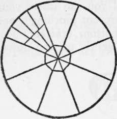
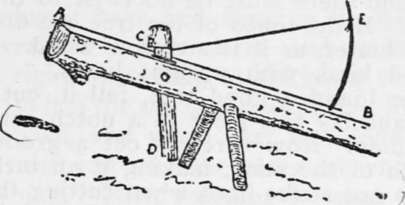

Axemanship. Qualities And Utilization Of Wood. Part 6
Description
This section is from the book "Camping And Woodcraft", by Horace Kephart. Also available from Amazon: Camping and Woodcraft.
Axemanship. Qualities And Utilization Of Wood. Part 6
This will make your split run back again into the thicker section.
Having quartered the bolt, now carefully rive each quarter into two clapboards or shingles (Fig. 51). You may have to turn the piece three or four times in order to get boards of uniform thickness. It is right here that judgment and skill are called for.
With good wood, already bolted, an experienced hand can turn out about one thousand clapboards, or four thousand shingles, in a day. Experts do better.
Clapboards, although slower to make than short shingles, save time and labor in the end, because of their extra span, and because they can be nailed directly to rib poles running lengthwise of the roof, whereas shingles require strips of board or flattened poles laid across rafters and close together. The rib pole construction makes a prettier gable end than the usual way of boxing up the gable with boards, because courses of logs are carried all the way up into the peak. Sawed boards break rustic enCect.
Shingles
However, li shingles be preferred, they, too, can readily be made from the green tree. These hand-made shingles, if finished by shaving smooth with a drawing knife, are superior to the mill product.
To make them, a large tree is chosen, and the cuts are double bolted (as in Fig. 52). Since the sides of the outer bolts are almost parallel, the un-shaved shingles will be of nearly even thickness on both edges. In riving shingles the bolt is turned end-for-end every time a shingle is struck off, and the shingles are allowed to run out a little so as to be thinner at one end than at the other.
A rude but efficient shaving-horse is shown in Fig. 53. My partner and I made such a one in an hour out of a chestnut log, a dogwood fork, two sticks for legs, and a hickory wand. The log (A B in Fig. 53) is flattened on top to the rear of C. The far end rests on the ground and the near one is elevated on legs to such height that a man sitting in front of it will find A at the level ojjiis elbows. The clamp C D is pivoted in a slot by a wooden pin. (We had a chisel, but no auger; so we burned the hole out with a red-hot poker). Its head, C, may be cut as shown or formed of the stub of a natural fork. The end D is high enough to clear the ground, and at such distance from A that the operator can press against it with his foot, and thus clamp the head down on a shingle which is laid from C to A. A bowstring runs from C to the springy stick E inserted in the log a few feet back of the clamp, to hold the latter back out of the way when not in use. For ordinary cabins, the clapboards or shingles do not require shaving.
Fig. 52. Double Bolting for shingles.
Fig. 53. Shaving Horse.
shingles are best made of soft wood (cedar is first choice). Then, if stacked and seasoned, they will not cup. If oak shingles are seasoned they will split in nailing; consequently they are used green. Moderate cupping does not necessarily mean a leaky roof, but it is unsightly. Clapboards, although always laid green, cannot cup, because they are nailed at both ends. They should be laid thick edge to thick and thin to thin. A thin .board will outlast a thick one and makes tighter joints.
Speaking of cupping—it is universally believed by backwoodsmen that green shingles surely will cup if laid at any other time than "the old of the moon.'* Twice out of three times they will cup anyway—but it is heresy to say so.
Long, Slender Splits
When one is obliged to use wood that does not naturally split very straight, he still can rive out long and slender pieces of uniform thickness by careful manipulation. In his very practical little book on Camp and Trail Methods, Mr. Kreps describes the following method that he uses in getting material for snowshoe frames out of white birch, which is the only good wood for the purpose that is to be found in the far northern woods:
"Look along the edges of the swamps and you will fin!d long, slender birches with smooth bark. Select one of about six inches in diameter, free of knots and flaws for about ten feet. It should be straight, and there must be no- twist to the grain of the wood. If the limbs of the tree are drooping, so much the better, as it is stronger wood. Avoid the red-barked kind, with upright limbs.
"Having found a good tree, fell it, cut off about ten feet, and lay this piece in a notch cut1 in an old log or stump. Now carefuly cut a groove the entire length of the stick, making it an inch or more deep. Do not strike hard when cutting this groove, or you will shatter the wood. When finished, turn the stick over and make a similar groove in the opposite side.
"Now go along the entire length and strike lightly with the axe in the bottom of the groove to star* the split; turn the stick over and do the same with the other side.
"Next make two small wooden wedges, and, commencing at the end of the stick, driving one wedge in each groove, keep moving them along, and the stick will split nicely, following the grooves. If at any point the split is inclined to lead away from the groove, bring it back by cutting the contrary fibers.
"Now select the best of the two pieces and cut another groove the entire length, on tne bark side. Sprit this the same as before and you will have the wood for two frames".
Quick Seasoning
Green wood can be seasoned quickly, or rather have the sap driven out of it and the fibers hardened, by careful roasting in hot ashes or over the camp-fire. The old English word for such treatment of wood was "beathing." For the time being, this makes the wood soft and pliable, so that it can be bent into any required shape, or it can V>e straightened by hanging a weight from one end, or by fastening it to a straight form; but when the wood has cooled, it becomes stiff, as if regularly seasoned.
Continue to:
- prev: Axemanship. Qualities And Utilization Of Wood. Part 5
- Table of Contents
- next: Axemanship. Qualities And Utilization Of Wood. Part 7